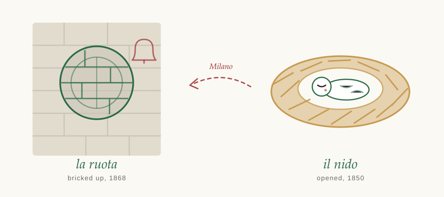

ICU and You · L'angolo italiano · Number 2
The Italian of this week's subject — and the wheel that closed when the nest opened
Ask an Italian where the babies are and they will tell you: il nido. The nest.
It is the ordinary word, used without ceremony. The newborn nursery in a hospital is il nido; the place you leave a child under three while you work is l'asilo nido, the nest-refuge. Nobody in Italy hears a metaphor in it any more, which is usually the sign that a metaphor has done its job.
What makes it worth a column is that it is the third metaphor Europe tried, and the only one that stuck.
On 14 November 1844 Firmin Marbeau opened the first crèche in Paris — a place to keep the infants of working women alive between the maternity ward and the age of two and a half. Crèche means manger: a feeding trough, and by extension the stable at Bethlehem.
When the idea crossed the Alps in the 1840s, Italy translated the metaphor rather than the word, and called these places presepi — nativity scenes. The first true Italian one opened in Milan in 1850: the Pio ricovero per bambini lattanti, founded by the educator Giuseppe Sacchi with Laura Solera Mantegazza, who ran it and was, by every account, the reason it worked.
French
la crèche
the manger — where the animals feed
Italian, then
il presepe
the nativity — the whole scene, ox and all
Italian, now
il nido
the nest — no religion, just somewhere warm
Somewhere between the nineteenth century and this one, Italy quietly dropped the stable and kept the bird. The nativity survives only as the Christmas crib on the mantelpiece.
Milan abolished its ruota degli esposti — the foundling wheel of column No. 1 — in 1868, eighteen years after the first nest opened in the same city. That is not a coincidence, and it is the whole argument of both columns in one line: the wheel could be closed because the nest had opened. A society stops needing a hole in a wall for anonymous babies at precisely the moment it provides somewhere for their mothers to leave them by daylight and come back.

Il ricovero. In that 1850 title it means a refuge or shelter — the old sense. In a modern Italian hospital it means an admission: ricoverare un paziente is to admit a patient, and il ricovero in terapia intensiva is admission to ICU.
The same word, two centuries apart, meaning both taking someone in and taking someone on. Which is a rather generous way to describe what we do at three in the morning.
Il lattante. The infant at the breast — from latte, milk. Set it beside the French nourrisson, the one being nourished, and a pattern appears: both languages name the baby for what it is given. English says infant, from infans — not speaking — and names it for what it cannot yet do. One tradition describes a relationship; the other describes a deficit.
L'asilo. From the Greek ásylon, a place that cannot be seized: the same root that gives English asylum. So asilo nido is, quite literally, a sanctuary-nest — which is a great deal to ask of a room with small chairs in it, and no worse a description of a children's ward.
What does your unit call the place the babies are — and what does that name imply?
Nursery, special care, the nest, the pod, a number. Names carry assumptions, and the ones we stop hearing carry them most effectively. Send me yours, along with any medical word in any language that has turned out to mean more than it looked like meaning.
The button opens a reply straight to me. If your device blocks it, write to icuandyou@icloud.com instead.